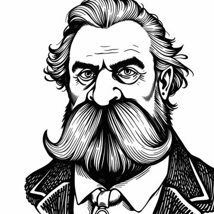

Friedrich Nietzsche on LinkedInThe accumulation of profiles on LinkedIn serves as a testament to the human desire for validation, a craving that is sated by the relentless pursuit of connections and endorsements. It is here that individuals seek to establish their existence, to proclaim their skills and accomplishments to a vast and largely indifferent audience.
And yet, in this digital landscape, one finds a peculiar sort of intimacy: the fabricated familiarity that arises from the exchange of brief, formulaic messages, the likes and comments that simulate a sense of community. But what lies beneath this veneer of connection is a profound solitude, a disconnection from the very essence of human experience, reduced to a series of calculated transactions and strategic alignments. In this realm, the individual is diminished, subsumed by the imperatives of self-promotion, and the distinctions between authenticity and artifice are willfully obscured.
Also on LinkedIn: Mark Twain.